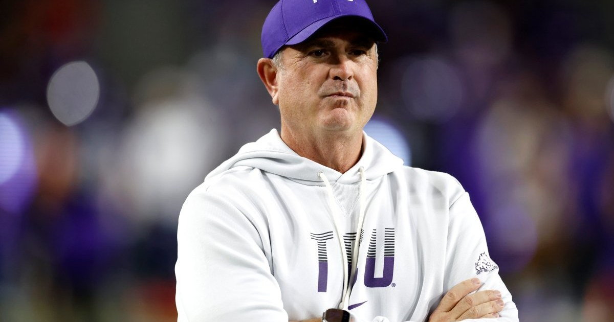

TCU fires Sonny Dykes after five seasons — four years after the national title run
TCU has fired head coach Sonny Dykes, four years after he took the Horned Frogs to the national championship game. The move came a day after a home loss to No. 2 Utah left TCU needing a win just to reach a bowl.

Disclosure: this post contains affiliate links. I earn a commission on qualifying purchases.
The firing
TCU has fired head coach Sonny Dykes after five seasons, sources told On3 on Sunday, ending a tenure that swung from the program's greatest high to a midseason firing in the span of four years. The Athletic's Chris Vannini also reported the decision, and theScore confirmed it through On3's reporting.
As of Sunday afternoon, TCU had not formally announced the move or named an interim coach. The timing leaves the program in limbo with one regular-season game left — a Thanksgiving night trip to face No. 12 Texas Tech, where the Horned Frogs need a win to become bowl eligible.
The fall
The final straw came Saturday night at Amon G. Carter Stadium, where No. 2 Utah beat TCU 38-17 and dropped the Horned Frogs to 5-6 on the season and 3-5 in Big 12 play.
It was a fitting end to a season that never found its footing. TCU opened 2026 in Dublin with a loss to North Carolina, and the offense never recovered from losing starting quarterback Josh Hoover to the transfer portal after last season — Harvard transfer Jaden Craig took over under center, and the Horned Frogs never looked like the same program that had been a fixture in the Big 12 race.
The decline was steady, not sudden. After the title-game run, TCU went 5-7 in 2023, then steadied at 9-4 in each of the past two seasons, with wins in the Alamo Bowl and the New Mexico Bowl. This fall erased that progress, and the home loss to Utah — TCU's sixth defeat — made the decision for the administration.
The peak
What makes the firing sting is how high Dykes took TCU, and how recently.
Hired in 2022 to replace Gary Patterson, Dykes inherited a program that had been good but never great — and immediately produced the greatest season in school history. With quarterback Max Duggan, the Horned Frogs went undefeated in the regular season, earned a berth in the Big 12 championship game, and, despite a loss to Kansas State in the title game, made the four-team College Football Playoff.
TCU upset No. 2 seed Michigan in the Fiesta Bowl for the program's first national championship berth, before No. 1 seed Georgia cruised to a 65-7 win in the title game. It remains the high-water mark for TCU football — and the standard Dykes was ultimately judged against.
What's next
TCU will immediately begin a national search for its next head coach. Early names floated in reports include defensive coordinator Andy Avalos as an internal option, along with UTSA head coach Jeff Traylor, North Texas head coach Neal Brown and Houston offensive coordinator Slade Nagle.
The cost of the move is not publicly known — TCU is a private university, so contract terms are not a matter of public record. A figure of $13.1 million has been cited for the buyout, though it is unconfirmed, and ESPN's Pete Thamel reported Sunday it could cost around $20 million. Dykes previously earned about $7 million annually after signing a multi-year extension in April.
The coach
Dykes leaves with a 107-81 overall record in 16 seasons as a head coach, with stops at Louisiana Tech, Cal and SMU before TCU. At SMU he rebuilt a program that had been an afterthought into a winner, and at TCU he delivered a national title-game appearance in year one. He just never got back there — and in college football, that is what gets a coach fired.
Sources
• TCU fires Sonny Dykes after five seasons (On3)
• Report: TCU fires Dykes after 5 seasons (theScore)
• Sonny Dykes Reportedly Fired by TCU, Top HC Replacements After Loss to Utah (Bleacher Report)
• TCU Fires Sonny Dykes One Day After Ugly Loss To No. 2 Utah (Roundtable, via The Athletic)
• TCU Fires Sonny Dykes: Buyout Details, Why Decision Made Now (Heavy)
Gear up: Fanatics